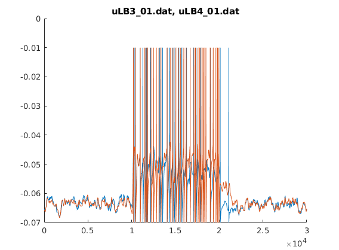

This is the readme for the model file associated with the paper:
Hoshino O, Kameno, R, Watanabe K (2019) Reducing variability in motor cortex activity at a resting state by extracellular GABA for reliable perceptual decision-making. J Comput Neurosci
This c-program was contributed by O Hoshino. It was originally built using Microsoft Visual C++ and also works in Microsoft Visual Studio 2012 (create a new project, add the c file to it, and build and run).
More usage instructions:
20191118: Note from ModelDB administrator: The web page https://www.cs.auckland.ac.nz/~paul/C/Windows has a recipe for installing the free Visual Studio Community 2017 (applicable to the 2019 version): https://visualstudio.microsoft.com/downloads/
After installed, start the Visual Studio power shell in the start menu. Change directory to this expanded archive's folder, then compile and run by typing:cl /W4 .\ASMAfmd6.c
.\ASMAfMD6.exe
(takes a few minutes to run) A matlab data file reader (type "file_reader" on the matlab command prompt) provides a sample plot of output traces from selected basket cells:
